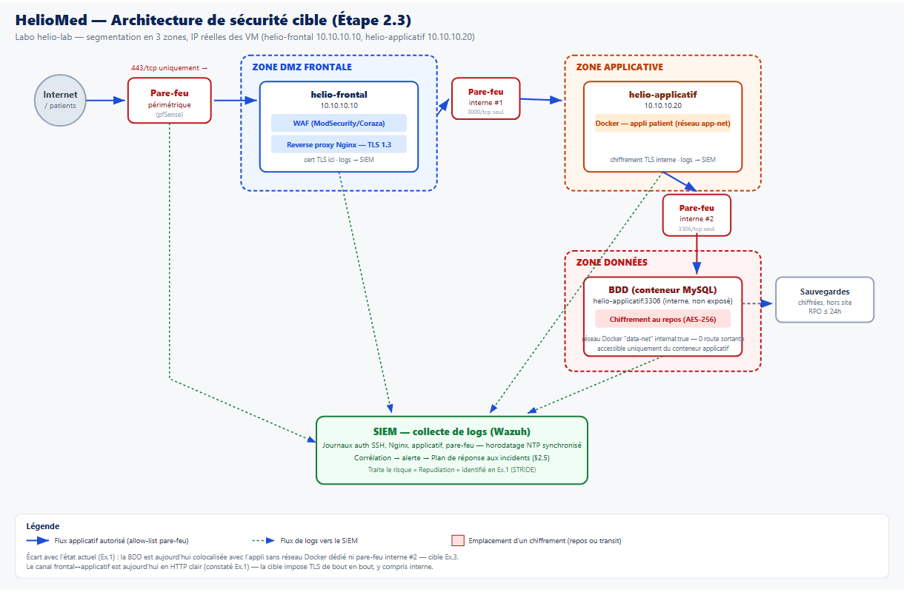

15 mesures (minimum 12 requis), reliées à un contrôle ISO/IEC 27002:2022 et à une règle du guide d'hygiène ANSSI. [Ex.1] = corrige directement une faille réelle constatée en Ex.1.
| # | Mesure | ISO 27002:2022 | ANSSI |
|---|---|---|---|
| 1 | MFA sur tous les accès admin (GitHub, VPN, bastion) | 5.17 · 8.5 | R8 |
| 2 | Clés SSH individuelles, jamais de compte partagé Ex.1 | 5.16 · 8.2 | R8 |
| 3 | Régénération des secrets après clonage de VM Ex.1 | 8.9 · 8.24 | R15 |
| 4 | Segmentation réseau 3 zones (DMZ/appli/données) | 8.22 · 8.20 | R15-17 |
| 5 | Pare-feu à règles explicites, allow-list | 8.20 · 8.21 | R18-19 |
| 6 | Chiffrement des données de santé au repos | 8.24 | R13 |
| 7 | Chiffrement en transit TLS, y compris interne | 8.24 · 5.14 | R13 |
| 8 | Gestionnaire de secrets, fin des mdp en clair Ex.1 | 8.24 · 5.17 | R5 |
| 9 | Rotation des secrets (90j / immédiate si fuite) Ex.1 | 8.24 · 5.18 | R5, R8 |
| 10 | Journalisation centralisée vers SIEM | 8.15 · 8.16 | R33-35 |
| 11 | Sauvegardes chiffrées et testées (RPO ≤24h) | 8.13 | R37 |
| 12 | Durcissement — services inutiles supprimés Ex.1 | 8.9 · 8.8 | R9-11 |
| 13 | Gestion des correctifs (patch mgmt, délai max) | 8.8 | R12 |
| 14 | Sécurité applicative OWASP Top 10 Ex.1 | 8.26 · 8.28 | R39-41 |
| 15 | Scan SCA/DAST intégré au pipeline CI/CD | 8.29 · 8.8 | R41 |
Détail complet : docs/exercice2/plan_securite.md.
| Phase | Mesures placées | Point de contrôle go/no-go |
|---|---|---|
| Conception | #4 Segmentation · #6-7 Chiffrement · #8 Secrets · STRIDE/EBIOS (Ex.1) | Schéma validé et raccordé aux VM réelles avant tout déploiement |
| Build (CI) | #15 Scan SCA (Trivy) · scan secrets (gitleaks) · #14 OWASP | Ex.2 : rapport non bloquant. Ex.3 sur code réel : 0 CVE critique → merge, sinon build rejeté |
| Déploiement | #1-3 MFA/SSH/secrets · #5 Pare-feu · #12-13 Durcissement | Checklist durcissement signée (Lynis) avant bascule |
| Run | #9 Rotation · #10 SIEM · #11 Sauvegardes · scans périodiques | Alerte SIEM critique → plan de réponse (§5) avant reprise |
.github/workflows/security.ymlGitleaks (secrets) + Trivy (filesystem/IaC + 3 images du docker-compose), à chaque push. Vérifié en conditions réelles — poussé sur GitHub, exécuté, corrigé une fois (version d'action invalide), 5/5 jobs verts au 2ᵉ essai.
jobs:
secrets-scan:
steps:
- uses: gitleaks/gitleaks-action@v2 # ✓ passé — SARIF produit
sca-scan-repo:
steps:
- uses: aquasecurity/trivy-action@master
with: {scan-type: fs, scanners: 'vuln,misconfig,secret'}
sca-scan-images:
strategy:
matrix: {image: [juice-shop, web-dvwa, mysql:5.7]}
steps:
- uses: aquasecurity/trivy-action@master # ✓ 3/3 images passées
gh run view confirme 5/5 jobs ✓. Le scan Trivy sur vulnerables/web-dvwa a retrouvé
les 805 CVEet son scanner de secrets a détecté une
clé privée SSL embarquée dans l'image (/etc/ssl/private/ssl-cert-snakeoil.key) —
preuve que l'outil analyse réellement le contenu.3 zones (DMZ frontale / applicative / données), ancrées sur les IP réelles du labo
(helio-frontal 10.10.10.10, helio-applicatif 10.10.10.20) — pas un schéma générique. Source éditable :
assets/architecture_cible.drawio.

| Test | Outil | Cible | Critère | État réel constaté |
|---|---|---|---|---|
| DAST | ZAP | Appli patient | 0 High non traité | ✓ Conforme (0 High) |
| SCA | Trivy | Image applicative | 0 CVE critique | ✗ Non conforme (8 CRIT démo) |
| Durcissement | Lynis | 2 VM Linux | Score en hausse documentée | Baseline 61-62/100 |
| Réseau | Nmap | 2 VM | Aucun port inutile | ✗ Non conforme (Samba ouvert) |
| VM | Hardening index | Suggestions | Warnings |
|---|---|---|---|
| helio-frontal (10.10.10.10) | 61/100 | 52 | 2 |
| helio-applicatif (10.10.10.20) | 62/100 | 53 | 2 |
Scores proches (VM clonées de la même base). Suggestions prioritaires cohérentes avec le
plan de sécurité : installer fail2ban (#1), mot de passe GRUB, âge min/max des mots de passe (#9).
Détail : outputs/exercice2/lynis_*_report.dat.
| Rôle | Qui | Responsabilité |
|---|---|---|
| Décideur | Responsable technique/DSI | Déclenche/lève le plan, arbitre, valide la notification CNIL |
| Agit | Admin sys/réseau + dev d'astreinte | Confinement, éradication, restauration |
| Communique | DPO / RGPD | Notification CNIL, information des patients si risque élevé |
| Support | Prestataire infogérance | Renfort technique si incapacité de l'équipe interne |
| Niveau | Exemple | Délai |
|---|---|---|
| P1 Critique | Fuite données santé, ransomware actif | < 30 min |
| P2 Élevé | Compte admin compromis, CVE critique exploitée | < 2 h |
| P3 Modéré | Alerte SIEM non confirmée, port ouvert inattendu (Samba, Ex.1) | < 24 h |
| P4 Faible | Alerte config mineure | Backlog sécurité |
1. Préparation (ce plan, astreinte, SIEM, sauvegardes testées) · 2. Identification (alerte SIEM, ticket horodaté) · 3. Confinement (isolement réseau via pare-feu interne, rotation immédiate des secrets — mesure #9) · 4. Éradication (patch, régénération des clés — mesure #3) · 5. Rétablissement (restauration testée — mesure #11) · 6. Retour d'expérience (mise à jour du registre d'actifs/STRIDE si risque non anticipé).
| Étape | Résultat |
|---|---|
| 2.1 Plan de sécurité (15 mesures) | ✅ OK |
| 2.2 Pipeline CI (gitleaks + Trivy) | ❌ version d'action invalide → ✅ corrigé, 5/5 jobs verts |
| 2.3 Schéma d'architecture cible | ✅ 3 zones, IP réelles, exporté .drawio/.svg/.png |
| 2.4 Plan de tests + baseline Lynis | ✅ table remplie + audit réellement exécuté sur les 2 VM |
| 2.5 Plan de réponse aux incidents | ✅ OK |
gh run view) plutôt que simplement écrit et supposé fonctionnel — une
erreur de version d'action a été détectée et corrigée en conditions réelles. L'audit Lynis a été
réellement exécuté sur les 2 VM plutôt que planifié sur le papier. Contrainte de temps : Ex.2 rédigé
en environ 2h entre la remise d'Ex.1 et l'échéance de 17h30 le même jour.Le plan de sécurité et l'architecture cible traitent directement les 6 risques STRIDE identifiés en Ex.1 (voir mesures marquées Ex.1). Le plan de tests documente honnêtement l'écart entre la cible (3 zones, TLS de bout en bout, 0 CVE critique) et l'état réel constaté (Samba ouvert, BDD colocalisée, 805 CVE sur l'image de démonstration) — cet écart devient le plan de travail concret de l'Exercice 3.